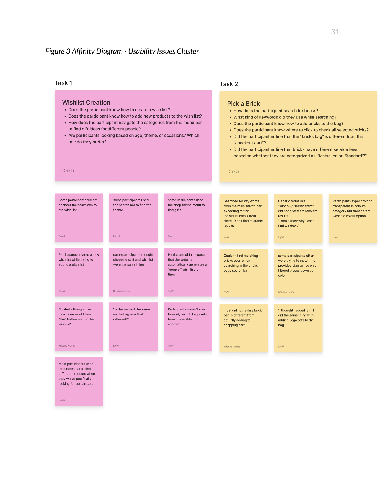

Evaluate how users navigate shopping and product-discovery flows.
Academic usability evaluation
Improving Usability Across the LEGO E-Commerce Experience
Evaluating how users shop, discover products, create wish lists, and build with individual bricks on LEGO.com.
DiscoverSaveFilterBuildEvidence → priorities
- Project type
- Academic usability evaluation
- Role
- Facilitator, observer, and evaluator
- Participants
- 1 pilot + 5 evaluated participants
- Methods
- Moderated testing, think-aloud, task-success analysis, thematic synthesis
- Focus
- Wish lists, part discovery, and bag feedback
Five participants completed the architecture-shopping task. None completed Pick a Brick. The contrast helped us identify where product discovery and shopping feedback needed attention.
01 / Overview
Evaluating an established shopping experience
This academic usability evaluation examined shopping and product discovery on LEGO.com: finding and saving products, searching for individual pieces, understanding distinct bag systems, browsing with themes and filters, and completing common shopping tasks with confidence.
My contribution within Team 3 Bricks
I worked with Kristina Helms and Dessi Lang. Across the five evaluated sessions, I facilitated two, observed two, and evaluated one. We rotated roles, with at least two team members present for each session.
The team combined session observations, task results, and participant feedback into an affinity map and severity-rated recommendations.
DePaul University · HCI 460 Usability Evaluation Methods
Sessions: May 22–26, 2025 · Final report: May 27, 2025
A rich catalog with uneven interaction patterns
LEGO.com supports shopping behaviors ranging from purchasing complete sets to selecting individual bricks. Users completed targeted product-shopping tasks, but encountered serious difficulties with wish lists and Pick-a-Brick. The evaluation focused on identifying where current patterns support users and where they break down—not redesigning the entire site.
Evaluation scope
Shopping, saving products, browsing, filtering, and selecting individual bricks.
Central problem
Participants struggled to discover the wish list, locate individual pieces, and understand whether bricks had reached the Shopping Bag.
Research question
How might we improve task success and user confidence when people shop, save products, and build with individual bricks on LEGO.com?
What the evaluation measured
Identify usability breakdowns during important shopping tasks.
Record task completion, perceived difficulty, and overall shopping feedback.
Testing realistic tasks remotely
- Plan
- Pilot
- Test
- Analyze
- Prioritize
- Recommend
Participants
One full pilot informed refinements before five evaluated sessions. All five participants were familiar with online shopping; three had never visited LEGO.com, and two visited occasionally. Four had some LEGO experience; one had little or none.
Format & environment
Remote Zoom sessions used participants’ own computers, with screen sharing and recording after informed consent. The session script planned 15–20 minutes and used a shared test account.
Protocol
Participants thought aloud through three tasks, followed by post-task questions and difficulty ratings from 0 (easy) to 5 (hard). We logged time, unnecessary clicks, backtracking, confusion, and completion, then collected overall feedback.
Three shopping scenarios
Create a family gift wish list
Create a Christmas wish list for three family members: home décor for mom, cars for dad, and Harry Potter for a younger brother.
Evaluated- Discoverability and icon comprehension
- List organization and consistency
- System feedback
Build a car with individual bricks
Follow a car reference sheet to find four wheels, supporting pieces in any color, four transparent windows, and a hood. Transfer the selected pieces from the Bricks Bag to the Shopping Bag.
Evaluated- Search, filtering, and brick selection
- Bricks Bag versus Shopping Bag
- Confirmation and feedback
Find an architecture gift within budget
Use theme navigation and price filters to find an Architecture birthday gift for a friend within $50–$75, then add the chosen gift to the bag.
Evaluated- Category navigation and filters
- Product discovery
- Decision-making confidence
06 / Analysis
Comparing successful and unsuccessful patterns
Analysis combined task-success tracking, observed behaviors, errors and confusion, participant comments, thematic grouping, comparison of interaction patterns, and prioritization by severity and impact on completion.

One flow failed every participant
completed the task
Average difficulty: 1.7 / 5succeeded
Average difficulty: 3.6 / 5succeeded
Average difficulty: 0 / 5Reported task-level results for five participants; pilot excluded. Difficulty: 0 = easy, 5 = hard. Source: final report, pp. 10–11 and Figure 1. These are descriptive findings from a small study, not population estimates.
Where users struggled—and succeeded
The wish list is difficult to discover
Two of five participants could not complete the task. The heart was interpreted as a “like” button. The default “General” list also confused participants expecting custom lists; two thought earlier selections had been lost.
“I initially thought the heart icon would be a ‘like’ button not for the wishlist”
The Pick-a-Brick flow completely breaks down
None of five participants completed the task. Searches such as “window” and “transparent” produced irrelevant or empty results. Participants needed more useful size and category filters. Four of five did not recognize the distinction between the Bricks Bag and Shopping Bag; the fifth noticed only after checking the cart.
“I thought I added it in, I did the same thing with adding Lego sets to the bag.”
Targeted product shopping works well
The report records completion for all five participants. Theme browsing and price filtering supported finding an Architecture gift within $50–$75, although some participants initially struggled to locate the category and noted limited options within budget.
What the heuristic evaluation did not predict
Our earlier heuristic evaluation flagged inconsistent action buttons, hover effects, and visual elements. None of the participants noticed those inconsistencies during testing. The observed difficulties instead centered on wish-list meaning, individual-part discovery, and bag feedback.
This distinction kept our recommendations grounded in participant behavior rather than treating every expert-review concern as a demonstrated barrier.
Prioritize clarity where tasks break down
These are proposed improvements, not implemented or validated outcomes. Severity values below are the team’s ratings from the final report.
Make the two bags unmistakable
- Explicitly confirm that pieces were added to the Bricks Bag, not the main Shopping Bag.
- Distinguish the bags through naming, icons, and interaction feedback.
- Clarify the transfer step so people know when their pieces are ready for checkout.
Explain the wish-list action
- Add descriptive text beside the heart.
- Place the action visibly near Add to Bag.
- Use consistent placement on product overview and detail pages.
Support individual-part discovery
- Improve keyword matching and live suggestions for relevant themes and categories.
- Provide a Pick a Brick shortcut for individual-part searches.
- Add useful size filters, such as 1×2 bricks, and more intuitive classification.
Evidence to guide the next iteration
This small, remote study identifies usability problems within three scenarios. Its five-person results are directional, not representative of every LEGO shopper. Task completion follows the report’s summary; no redesigned flow was evaluated.
A next step would be to prototype clearer wish-list labeling, part-search support, and bag-transfer feedback, then retest the same tasks. Comparing completion and difficulty would help determine whether the proposed changes actually reduce friction.
Based on Team 3 Bricks’ “Usability Testing Report: Evaluating User Shopping and Building Experiences on the LEGO Website,” May 27, 2025. Process, findings, and recommendations summarized from the report; the original appendix is not published because it includes test-account information.